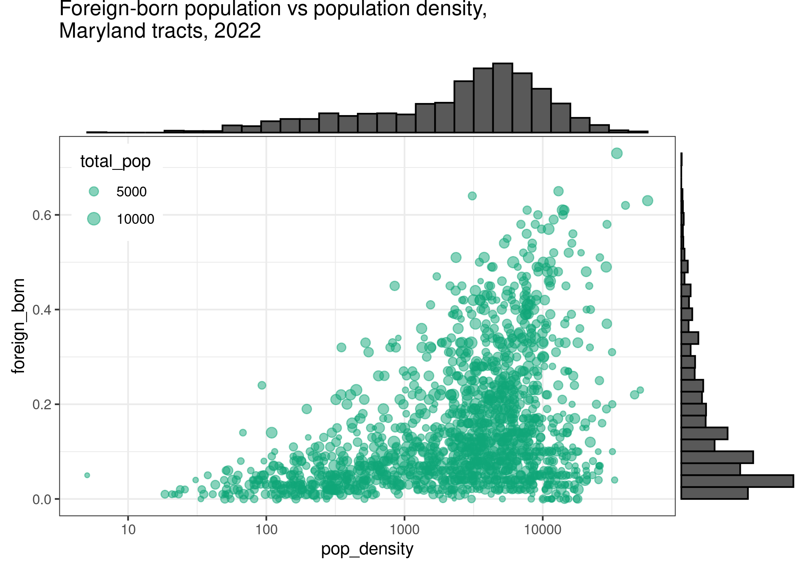
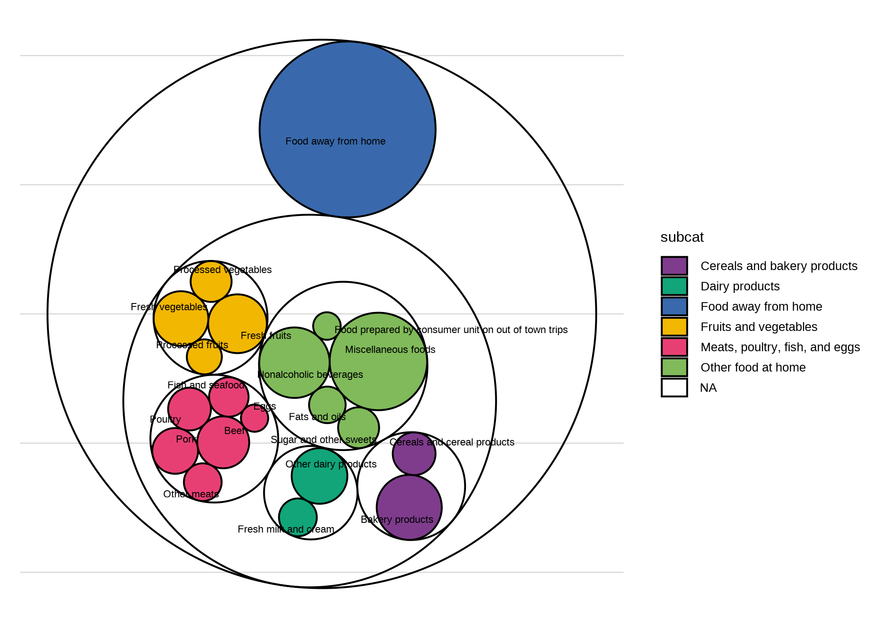

library(dplyr)
library(ggplot2)
library(justviz)
library(sf)
library(showtext)
library(waffle)
library(ggmosaic)
library(geofacet)
library(ggraph)
# for pictogram, requires installing Font Awesome font first
sysfonts::font_add(fa5_solid, "fa-solid-900.ttf")
showtext_auto()
showtext_opts(dpi = 200)
source(here::here("utils/plotting_utils.R"))
balt_metro <- c("Baltimore city", "Baltimore County", "Carroll County", "Anne Arundel County",
"Howard County", "Queen Anne's County", "Harford County")
theme_set(theme_nice())
counties_sf <- tigris::counties(state = "24", cb = TRUE) |>
select(name = NAMELSAD)
states_sf <- tigris::states(cb = TRUE) |>
janitor::clean_names() |>
select(geoid, name) |>
st_shift_longitude() |>
rmapshaper::ms_simplify(keep = 0.05)
edu_by_state <- readRDS(here::here("inputs/edu_by_state.rds"))18. Experimentation
Warm-up
It’s May Day, International Workers Day! In honor of the best holiday, spend a few minutes exploring Working Class History’s online map of hidden gems in labor and social justice history around the world: [https://map.workingclasshistory.com/] Where do you see clusters in space and/or time? Zoom in on a place you’re familiar with. Do any of the events there already have monuments or any other identifiers? How could those places be marked in ways that are accessible to the surrounding area?
Experiments
This is a grab bag of less ordinary chart types that we didn’t get to during the semester. Feel free to try them out for your project—if it has an asterisk next to it, it’s complex enough to count for 2 of your 3 charts. Note that none of these are super polished, so charts for your project should look nicer than these! Many of these ggplot add-ons have lots of arguments that I didn’t experiment with here, so make sure to read through their documentation.
I also made up a few more small datasets to match the chart types I wanted to show here; the scripts for those are in the utils folder, and the datasets are in the inputs folder.
Also we didn’t get a chance to talk about annotations in mapping, but I put examples of north arrows and scales in [./15_color_text_mapping.html].
Additional packages you’ll need to run everything here:
- ggrepel
- ggExtra
- ggbeeswarm
- data.tree
- tidygraph
- ggraph
- cartogram
- waffle (the one on CRAN is way outdated; use the one on GitHub
remotes::install_github("hrbrmstr/waffle")) - showtext in order to make the pictogram with waffle; use
waffle::install_fa_fonts()to install Font Awesome - ggmosaic (again install from Github:
remotes::install_github("haleyjeppson/ggmosaic")) - geofacet
- geogrid (installs with geofacet)
Non-spatial
Slopegraphs
A slopegraph is pretty much just a line chart with (generally) only start and end values. They’re useful for quickly showing how several groups change some value between 2 points in time, and how all the groups compare to one another at both of those endpoints. The drawback is that you miss any important changes that may have happened in between those 2 points, so make sure there isn’t any volatility or other patterns you could be leaving out. These work well for something where steady growth or decline is a reasonable expectation, not something that fluctuates like unemployment rates.
ej_endpts <- ej_trend |>
group_by(year, indicator) |>
summarise(med_d2 = median(d2_ptile)) |>
filter(year %in% c(2018, 2023)) |>
# only include indicators that appear in both years
group_by(indicator) |>
filter(n() == 2) |>
ungroup()|>
# taking a subset to keep simple
filter(indicator %in% c("lead_paint", "ozone", "superfund", "traffic", "haz_waste", "wastewater", "risk_mgmt_plan"))
ej_endpts |>
mutate(indicator = forcats::fct_relabel(indicator, snakecase::to_sentence_case)) |>
mutate(lbl = paste(indicator, med_d2, sep = ": ")) |>
# set group to the same variable as color
ggplot(aes(x = year, y = med_d2, color = indicator, group = indicator)) +
geom_line(linewidth = 1) +
geom_point(size = 3) +
ggrepel::geom_text_repel(aes(label = lbl), hjust = "outward", size = 5,
seed = 1, direction = "y", point.padding = unit(0.5, "lines")) +
scale_x_continuous(breaks = c(2018, 2023),
expand = expansion(add = 1.5)) +
scale_y_continuous(breaks = NULL) +
scale_color_manual(values = qual_pal) +
theme(legend.position = "none") +
labs(x = NULL, y = NULL,
title = "Median EJSCREEN environmental justice index percentile by risk factor, Maryland block groups, 2018-2023")When you have a slopegraph with a lot of observations but where it’s more important to show the overall patterns than individual paths, you can set the lines all the same color except one to highlight, or set the color based on whether lines are trending upward or downward.
Marginal plots
Marginal plots are kind of smaller plots that, like the name implies, are squeezed into the margins along a larger plot. Using ggExtra these are easy to do but the syntax is a little different from other geoms: you save your plot to a variable, then pass it to the marginal plotting function.
to_margin <- acs |>
filter(level == "tract",
total_pop > 100) |>
ggplot(aes(x = pop_density, y = foreign_born)) +
geom_point(aes(size = total_pop), alpha = 0.5, color = qual_pal[2]) +
scale_size_area(max_size = 4) +
scale_x_log10() +
# theme(legend.position = "left") +
labs(title = "Foreign-born population vs population density,\nMaryland tracts, 2022") +
# doesn't seem to work with the title text wrapping that's in theme_nice, so replace it
theme_bw() +
# The new version of ggplot uses a different argument to place legends
theme(legend.position = c(0.02, 0.98),
legend.justification = c(0, 1))
ggExtra::ggMarginal(to_margin, type = "histogram")
Beeswarm plots
Beeswarms are a way to show the distribution of a continuous variable, which also keeping symbols for individual observations. They can be useful when they don’t have a ton of points, or when you have some wiggle room in terms of accuracy.
acs |>
filter(level == "tract",
county %in% c("Baltimore city", "Baltimore County", "Howard County")) |>
ggplot(aes(x = homeownership, y = county)) +
# also try ggbeeswarm::geom_beeswarm, and lots of different arguments
ggbeeswarm::geom_quasirandom(method = "quasirandom", nbins = 50) +
labs(x = NULL, y = NULL,
title = "Homeownership rates by county, Maryland tracts, 2022")Pie charts
We haven’t talked about pie charts because they are terribly overused. (A warm-up we didn’t do in class was just searching “are pie charts evil” online.) There are some cases where they’re appropriate, however, mostly when there are very few categories and they have very distinct proportions. In ggplot, a pie chart is just a stacked bar chart in polar coordinates. Pie charts should be used to show the parts of some whole.
commute <- readRDS(here::here("inputs/public_transit_commutes.rds")) |>
mutate(type = forcats::as_factor(type)) |>
group_by(name) |>
# dots for making a waffle plot
mutate(dots = justviz::round_sum100(share * 100)) |>
ungroup()
commute2 <- commute |>
filter(name %in% c("Baltimore city", "Prince George's County")) |>
mutate(type = forcats::fct_reorder(type, share, .fun = max, .desc = FALSE))
commute2 |>
ggplot(aes(x = 1, y = share, fill = type)) +
geom_col(position = position_fill()) +
# run code without this coord_polar call to see how it changes
coord_polar(theta = "y") +
facet_wrap(vars(name)) +
scale_x_continuous(breaks = NULL) +
scale_y_continuous(breaks = NULL) +
scale_fill_manual(values = qual_pal) +
labs(x = NULL, y = NULL,
title = "Means of transportation to work, share of workers who commute by public transportation, 2022")Waffle plots *
A waffle plot serves a similar purpose to a pie chart, but can do it more flexibly and can be easier to read accurately. If you replace your squares or dots with symbols for your categories, you’ve got a pictograph / isotype. These work best when you can get your data into some easy denominator, such as having 100 squares with each representing the proportion of some group. The last time I did one of these it was school district enrollment by race/ethnicity, so there were 100 dots and each represented one child out of 100. They don’t have to be square, however, but then you lose out on some of the ability to humanize your data through the ease of counting points. The function justviz::round_sum100 will do its best to coerce your data so it adds to 100 in spite of rounding.
commute2 |>
ggplot() +
# waffle hasn't updated from size argument to linewidth
waffle::geom_waffle(aes(fill = type, values = dots),
flip = TRUE, color = "white", size = 0.5) +
facet_wrap(vars(name)) +
coord_fixed() +
scale_fill_manual(values = qual_pal) +
scale_x_continuous(breaks = NULL) +
scale_y_continuous(breaks = NULL) +
labs(title = "Means of transportation to work, per 100 workers who commute by public transportation, 2022")You can use waffle::geom_pictogram and names of Font Awesome icons to turn this into a pictogram.
commute2 |>
ggplot() +
waffle::geom_pictogram(aes(color = type, label = type, values = dots),
flip = TRUE, size = 5) +
facet_wrap(vars(name)) +
coord_fixed() +
scale_color_manual(values = qual_pal) +
scale_x_continuous(breaks = NULL) +
scale_y_continuous(breaks = NULL) +
waffle::scale_label_pictogram(values = c("ship", "tram", "train", "subway", "bus")) +
labs(title = "Means of transportation to work, per 100 workers who commute by public transportation, 2022")Mosaic plot / marimekko
Mosaic plots are another way to show parts of a whole, but they do it in multiple dimensions, kind of a 2D stacked bar chart. I’ve used them for things like population by race/ethnicity across age groups, or population by race/ethnicity across redlining map grades. Here is an example that shows educational attainment and place of birth as the x and y dimensions, with the size in each direction representing the share or count. Along the x-axis, widths of boxes will add up to the total number of people at that education level, and along the y-axis, heights will add up to the total number of people with that place of birth. (If contingency tables mean anything to you, this is like the graphic equivalent.)
commute |>
filter(name %in% c("Baltimore city", "Baltimore County", "Anne Arundel County", "Howard County")) |>
mutate(across(where(is.factor), forcats::fct_drop)) |>
# order counties by total transit workers
# not sure why wrapping labels in scale_x_productlist call doesn't work so did it here
mutate(name = forcats::as_factor(name) |>
forcats::fct_reorder(count, .fun = sum, .desc = TRUE) |>
forcats::fct_relabel(scales::label_wrap(5))) |>
ggplot() +
geom_mosaic(aes(x = name, fill = type, weight = count)) +
# special scale from ggmosaic
scale_x_productlist(expand = expansion(add = c(0, 0.1))) +
scale_fill_manual(values = qual_pal) +
labs(title = "Means of transportation to work, of workers who commute by public transportation, 2022") +
theme(legend.position = "none")Hierarchical visualizations *
Occasionally you’ll come across data with a hierarchical structure, such that one observation is a “child” or subset of another, moving through some set of layers. Think of a directory structure on your computer, where you can start with one folder, but then have folders nested inside folders, nested inside more folders. The consumer expenditure survey data is structured like this (justviz::spending); this will be similar to what I did for the example midterm. There are several packages for working with hierarchical / tree-shaped structures specifically, and graph / network analysis more broadly, but it can be hard to wrangle your data into the right shape. One of the easier ways I’ve found is the package data.tree, which is designed for working with file paths but you can set any other data up to mimic file paths.
The tidygraph and ggraph packages are written by one of ggplot’s maintainers and help with creating graph / network data in a tidyverse-based workflow and plotting it with ggplot, respectively.
food_hier <- spending |>
filter(year == 2022,
l2 == "Food") |>
select(item, matches("^l\\d"), qtotal) |>
tidyr::unite("fake_path", l2, l3, l4, l5, remove = FALSE, na.rm = TRUE, sep = "/")
food_network <- data.tree::as.Node(food_hier, pathName = "fake_path") |>
tidygraph::as_tbl_graph() |>
# join some columns back in
left_join(food_hier |> select(item, l3, l4, qtotal),
by = c("name" = "item")) |>
# is this the lowest level in its branch?
mutate(is_leaf = tidygraph::node_is_leaf()) |>
# if so, make sure it has a subcategory
mutate(subcat = ifelse(is_leaf, coalesce(l4, l3), NA_character_))
ggraph(food_network, layout = "tree") +
geom_edge_diagonal2(aes(color = node.l4), linewidth = 0.5) +
geom_node_point(aes(size = qtotal), alpha = 0.8) +
geom_node_text(aes(label = name), data = ~filter(., is_leaf),
angle = 90, hjust = 1, nudge_y = -0.1, size = 3) +
# geom_node_text(aes(label = name), data = ~filter(., is_leaf)) +
scale_size_area(max_size = 10) +
scale_y_continuous(expand = expansion(add = c(4, 1)))Obviously that needs some work but hopefully you get the idea. Circle packing is another type of hierarchical layout.
ggraph(food_network, layout = "circlepack", weight = qtotal) +
geom_node_circle(aes(fill = subcat)) +
geom_node_text(aes(label = name), size = 3, repel = TRUE, seed = 1,
data = ~filter(., is_leaf)) +
# equal coordinates so these stay circles
coord_fixed() +
scale_fill_manual(values = qual_pal, na.value = NA)
Again, needs a lot of tedious cleaning.
Spatial
Bubble map
Instead of filling the space of each polygon for a choropleth, you place a circle there (usually its centroid) and scale it based on your data. 1 These can work well for things that aren’t appropriate for a choropleth, such as counts instead of rates, especially counts of something relatively rare where a single additional event could throw off the rate of a small area (that’s the main time I’ve used them, things like drug overdose deaths).
1 There are some different algorithms you can explore for defining the center of a region, since common definitions of a centroid can actually fall outside the polygon. You also might try schemes to weight the centroid to be more of a center of population mass than just a center of land mass. (example)
# just to have an example of a count instead of rate, calculate number of people with grad degrees
grad_degrees <- counties_sf |>
left_join(acs, by = "name") |>
st_transform(2248) |>
mutate(n_grad_degree = round(grad_degree * ages25plus))
# draw county boundaries, then draw points at their centroids
grad_cents <- st_centroid(grad_degrees)
# putting data frames in separate geom_sf calls just to avoid confusing myself
# as to which data frame is in which geom layer
ggplot(grad_degrees) +
geom_sf(color = "gray20", linewidth = 0.2) +
geom_sf(aes(size = n_grad_degree), data = grad_cents, color = qual_pal[2], alpha = 0.6) +
# make sure to scale by area, not radius
scale_size_area(max_size = 10) +
labs(title = "Number of people with graduate degrees, Maryland adults ages 25+ by county, 2022")Cartograms *
A cartogram is like a choropleth, but the shapes have been distorted to account for the effect of different area sizes on how you view the choropleth, such as scaling area proportional to population. The downside is they’re hard to read for a place you’re not very familiar with, so I mostly only see them done well for something like the US by state, or the world by country.
# the cartogram package has 3 different algorithms for creating cartograms
# returns an sf object, requires input be projected
# could instead scale by pop 25+
grad_degrees |>
cartogram::cartogram_cont(weight = "total_pop") |>
ggplot() +
geom_sf(aes(fill = grad_degree)) +
scale_fill_distiller(palette = "YlGnBu", direction = 1) +
labs(title = "Share of adults with graduate degrees, Maryland adults ages 25+ by county, 2022",
subtitle = "Shapes sized by total population")This is totally ridiculous though—not a lot of people are going to know Maryland counties well enough for this to be useful. For reference, I just searched online for “US cartogram” and mostly got presidential election maps, some of which make me nauseous.
An alternative is a Dorling cartogram, which replaces the polygon oozing effect with a circle packing algorithm.
grad_degrees |>
cartogram::cartogram_dorling(weight = "total_pop") |>
ggplot() +
geom_sf(aes(fill = grad_degree)) +
scale_fill_distiller(palette = "YlGnBu", direction = 1) +
labs(title = "Share of adults with graduate degrees, Maryland adults ages 25+ by county, 2022",
subtitle = "Shapes sized by total population")Again, not great for counties, but works okay for states.
grad_degrees_us <- edu_by_state |>
filter(place_of_birth == "total", edu == "grad_degree") |>
tidyr::pivot_wider(id_cols = c(geoid, name, total_pop),
names_from = edu, values_from = share)
states_sf |>
# to do contiguous cartogram keeping only continental US, sorry AK and HI
filter(!name %in% c("Alaska", "Hawaii")) |>
# needs to be projected so put it in albers equal us
st_transform(5070) |>
# inner join in order to drop state-ish areas that don't have data e.g. Guam
inner_join(grad_degrees_us, by = c("geoid", "name")) |>
cartogram::cartogram_cont(weight = "total_pop") |>
ggplot() +
geom_sf(aes(fill = grad_degree)) +
scale_fill_distiller(palette = "YlGnBu", direction = 1) +
labs(title = "Share of adults with graduate degrees, adults ages 25+ by state, 2022",
subtitle = "Shapes sized by total population")Still hard to see the area with the highest rate by far, DC, since even scaling by population it’s way smaller than anywhere else.
states_sf |>
filter(!name %in% c("Alaska", "Hawaii")) |>
st_transform(5070) |>
inner_join(grad_degrees_us, by = c("geoid", "name")) |>
cartogram::cartogram_dorling(weight = "total_pop") |>
ggplot() +
geom_sf(aes(fill = grad_degree)) +
scale_fill_distiller(palette = "YlGnBu", direction = 1) +
labs(title = "Share of adults with graduate degrees, adults ages 25+ by state, 2022",
subtitle = "Shapes sized by total population")Gives DC a little more breathing room. Here are a bunch more examples.
Grid map *
I don’t know if that’s really the right name for it. They use these a lot on NPR’s site. Like the cartograms, these are best used for very familiar geographies. You can get grids premade from the geofacets package, including states in the US and counties in some large states (not MD).
percent <- scales::label_percent(accuracy = 1)
edu_by_state |>
filter(edu == "grad_degree") |>
ggplot(aes(x = share, y = forcats::fct_rev(place_of_birth), fill = place_of_birth)) +
geom_col(width = 0.8) +
scale_x_continuous(breaks = seq(0, 0.4, by = 0.2),
labels = percent) +
scale_y_discrete(labels = NULL) +
scale_fill_manual(values = qual_pal) +
theme(panel.grid.major.y = element_blank(),
panel.grid.major.x = element_line(),
strip.text.x.top = element_text(margin = margin()),
axis.text.x.bottom = element_text(size = rel(0.7)),
legend.position = "bottom") +
facet_geo(vars(name), grid = "us_state_grid2", label = "code") +
labs(title = "Share of adults with graduate degrees by place of birth, adults ages 25+ by state, 2022")You can make a grid of any shapefile, such as Baltimore neighborhoods. Here are local businesses per 1,000 residents for Baltimore’s 55 community statistical areas (courtesy of our friends at BNIA):
nb_business <- readRDS(here::here("inputs/business_by_nhood.rds"))
balt_nb <- nb_business |>
slice_max(year) |>
select(name, geometry)
# doesn't actually generate the names it's expecting
nb_facet <- geofacet::grid_auto(balt_nb, seed = 1) |>
rename(name = name_name) |>
mutate(code = name)
nb_business |>
ggplot(aes(x = year, y = value)) +
geom_line() +
scale_x_continuous(breaks = c(2010, 2021)) +
facet_geo(vars(name), grid = nb_facet, scales = "free_y") +
theme(strip.text.x.top = element_text(size = rel(0.7)),
axis.text.x.bottom = element_text(size = rel(0.7))) +
labs(title = "Local businesses per 1,000 residents, Baltimore neighborhoods, 2010-2021")If you wanted to do something like that, you should definitely tweak it (the package docs have some instructions and even an app) because the placement isn’t all right—Fell’s Point is way off.
This one’s a little different, but the package geogrid makes grids of a shapefile, either a square grid or a hexagonal one. You can make a grid with sf and interpolate data over it (see the scripts to generate data for the MAUP notebook); the tricky part is maintaining the same number of polygons. Since this is what geofacet uses to create its grid, this unfortunately also puts Fell’s Point in the wrong place.
nb_grid <- geogrid::calculate_grid(balt_nb, grid_type = "regular", seed = 1)
geogrid::assign_polygons(balt_nb, nb_grid) |>
left_join(nb_business |> slice_max(year) |> st_drop_geometry(), by = "name") |>
ggplot() +
geom_sf(aes(fill = value)) +
scale_fill_distiller(palette = "YlGnBu", direction = 1) +
labs(title = "Local businesses per 1,000 residents, Baltimore neighborhoods, 2021")Dot density map *
A dot density map is a type of thematic map where instead of shading polygons, you fill in each space with randomized dots to represent your data. Generally this will be populations, so you might have one dot per person, or one dot per 100 people, or something to that effect. Most famously these have been done by race/ethnicity across different cities or the whole country.
To be more accurate, I usually like to do these with block-level data, which you only get from the decennial census (every 10 years). A few packages create randomized dots for you, or you can calculate manually. 2
2 Generating the points for a dot density map is usually a pretty compute-intensive process: I used the dots package (the script is at utils/dot_density.R) and even with 48GB of RAM, only 3 variables, only Baltimore city, and scaling the counts by a factor of 5, it still took about 5 or 6 minutes to calculate. That package doesn’t have an option for parallel processing, so for anything bigger than this I’d modify the package’s code or write the algorithm from scratch to work in parallel.
# takes almost 5 minutes so it's in a different script
tenure_dots <- readRDS(here::here("inputs/tenure_dot_density.rds")) |>
st_transform(2248)
# combine into multi-point geometries---should take less memory
# shuffle first in case since they're drawn by block
set.seed(1)
tenure_dots_merge <- tenure_dots |>
slice_sample(prop = 1) |>
group_by(dots_type) |>
summarise()
tenure_dots_merge |>
filter(dots_type == "total_hh") |>
ggplot() +
geom_sf(size = 0.05, alpha = 0.2) +
theme(plot.subtitle = element_text(margin = margin(1, 0, 0, 0, "lines"))) +
labs(title = "Dot density map, total households, Baltimore city, 2020",
subtitle = "One dot = 5 households")tenure_dots_merge |>
filter(dots_type != "total_hh") |>
ggplot() +
geom_sf(aes(color = dots_type), size = 0.05, alpha = 0.2) +
theme(plot.subtitle = element_text(margin = margin(1, 0, 0, 0, "lines"))) +
scale_color_manual(values = qual_pal[c(3, 5)],
guide = guide_legend(override.aes = list(size = 2, alpha = 1))) +
labs(title = "Dot density map, total households, Baltimore city, 2020",
subtitle = "One dot = 5 households")Binned or kernel density maps *
To make a kernel density map, you calculate the density of points in two (or more I suppose) dimensions using a smoothing function, then map the intensity. There are different ways to do this, including interpolating values over space and modeling them over a raster, or using point pattern analysis (package spdep is the workhorse for this). Here’s a cheap way by getting the x & y coordinates of points, then just plotting the density with ggplot’s built-in 2D density geom.
balt_sf <- counties_sf |>
filter(name == "Baltimore city")
art_xy <- art_sf |>
st_filter(balt_sf) |>
st_transform(2248) |>
mutate(coords = st_coordinates(geometry)) |>
mutate(x = coords[, 1],
y = coords[, 2])
# also try geom_bin2d instead of geom_hex
ggplot(art_xy, aes(x = x, y = y)) +
# half-mile bin width
geom_hex(binwidth = 5280 / 2) +
geom_sf(data = balt_sf, fill = NA, inherit.aes = FALSE, color = "black") +
# coerce back into coordinate-space
coord_sf(crs = 2248) +
scale_fill_viridis_c() +
labs(title = "Locations of public art, Baltimore city")ggplot(art_xy, aes(x = x, y = y)) +
# calculates a density and sets fill automatically
geom_density_2d_filled(bins = 8, alpha = 0.9) +
geom_sf(data = balt_sf, fill = NA, inherit.aes = FALSE, color = "black") +
# coerce back into coordinate-space
coord_sf(crs = 2248) +
scale_fill_brewer() +
labs(title = "Locations of public art, Baltimore city")That second one isn’t great! (If you change the palette to something with a dark color for low values, like the viridis scales, you’ll see why.) You could adjust it to fill the whole city, or you could limit the plot to the area that’s actually included in the density. There are better examples in Lovelace et al. (2019) but they get more into the weeds of raster analysis than we can do here.
Lovelace, R., Nowosad, J., & Muenchow, J. (2019). Chapter 6 Raster-vector interactions. In Geocomputation with R. https://r.geocompx.org/raster-vector.html
R version 4.3.3 (2024-02-29)
Platform: x86_64-pc-linux-gnu (64-bit)
Running under: Ubuntu 22.04.4 LTS
Matrix products: default
BLAS: /usr/lib/x86_64-linux-gnu/openblas-pthread/libblas.so.3
LAPACK: /usr/lib/x86_64-linux-gnu/openblas-pthread/libopenblasp-r0.3.20.so; LAPACK version 3.10.0
locale:
[1] LC_CTYPE=en_US.UTF-8 LC_NUMERIC=C
[3] LC_TIME=en_US.UTF-8 LC_COLLATE=en_US.UTF-8
[5] LC_MONETARY=en_US.UTF-8 LC_MESSAGES=en_US.UTF-8
[7] LC_PAPER=en_US.UTF-8 LC_NAME=C
[9] LC_ADDRESS=C LC_TELEPHONE=C
[11] LC_MEASUREMENT=en_US.UTF-8 LC_IDENTIFICATION=C
time zone: America/New_York
tzcode source: system (glibc)
attached base packages:
[1] stats graphics grDevices datasets utils methods base
other attached packages:
[1] ggraph_2.2.1 geofacet_0.2.1 ggmosaic_0.3.4 waffle_1.0.2 showtext_0.9-7
[6] showtextdb_3.0 sysfonts_0.8.8 sf_1.0-15 justviz_0.2.3 ggplot2_3.5.1
[11] dplyr_1.1.4
loaded via a namespace (and not attached):
[1] RColorBrewer_1.1-3 wk_0.9.1 jsonlite_1.8.8
[4] imguR_1.0.3 magrittr_2.0.3 ggbeeswarm_0.7.2
[7] farver_2.1.1 rmarkdown_2.25 vctrs_0.6.5
[10] memoise_2.0.1 terra_1.7-71 janitor_2.2.0
[13] htmltools_0.5.7 forcats_1.0.0 curl_5.2.0
[16] s2_1.1.6 KernSmooth_2.23-22 htmlwidgets_1.6.4
[19] plyr_1.8.9 plotly_4.10.4 lubridate_1.9.3
[22] cachem_1.0.8 uuid_1.2-0 commonmark_1.9.0
[25] igraph_2.0.3 mime_0.12 lifecycle_1.0.4
[28] pkgconfig_2.0.3 R6_2.5.1 fastmap_1.1.1
[31] shiny_1.8.1.1 snakecase_0.11.1 digest_0.6.34
[34] colorspace_2.1-0 rprojroot_2.0.4 productplots_0.1.1
[37] labeling_0.4.3 fansi_1.0.6 timechange_0.3.0
[40] httr_1.4.7 polyclip_1.10-6 compiler_4.3.3
[43] here_1.0.1 proxy_0.4-27 withr_3.0.0
[46] viridis_0.6.5 DBI_1.2.1 hexbin_1.28.3
[49] ggforce_0.4.2 Rttf2pt1_1.3.12 MASS_7.3-60.0.1
[52] geogrid_0.1.2 rappdirs_0.3.3 classInt_0.4-10
[55] tools_4.3.3 units_0.8-5 vipor_0.4.7
[58] beeswarm_0.4.0 httpuv_1.6.15 extrafontdb_1.0
[61] glue_1.7.0 promises_1.2.1 gridtext_0.1.5
[64] grid_4.3.3 generics_0.1.3 isoband_0.2.7
[67] gtable_0.3.4 class_7.3-22 tidyr_1.3.1
[70] data.table_1.15.4 tidygraph_1.3.1 sp_2.1-3
[73] xml2_1.3.6 utf8_1.2.4 ggrepel_0.9.5
[76] pillar_1.9.0 markdown_1.12 stringr_1.5.1
[79] ggExtra_0.10.1 later_1.3.2 ggtext_0.1.2
[82] tweenr_2.0.3 lattice_0.22-5 renv_1.0.3
[85] tidyselect_1.2.1 miniUI_0.1.1.1 knitr_1.45
[88] gridExtra_2.3 V8_4.4.1 xfun_0.41
[91] graphlayouts_1.1.1 DT_0.33 stringi_1.8.3
[94] lazyeval_0.2.2 yaml_2.3.8 geojsonsf_2.0.3
[97] rmapshaper_0.5.0 evaluate_0.23 codetools_0.2-20
[100] cartogram_0.3.0 data.tree_1.1.0 extrafont_0.19
[103] tibble_3.2.1 packcircles_0.3.6 cli_3.6.2
[106] xtable_1.8-4 munsell_0.5.0 Rcpp_1.0.12
[109] rnaturalearth_1.0.1 png_0.1-8 rcartocolor_2.1.1
[112] jpeg_0.1-10 viridisLite_0.4.2 tigris_2.1
[115] scales_1.3.0 e1071_1.7-14 purrr_1.0.2
[118] rlang_1.1.3